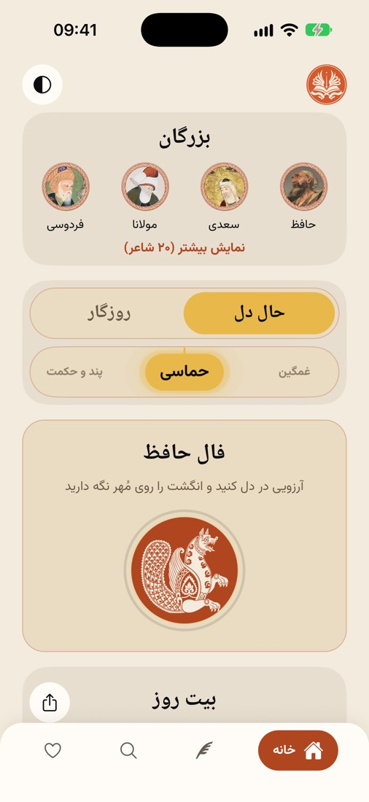
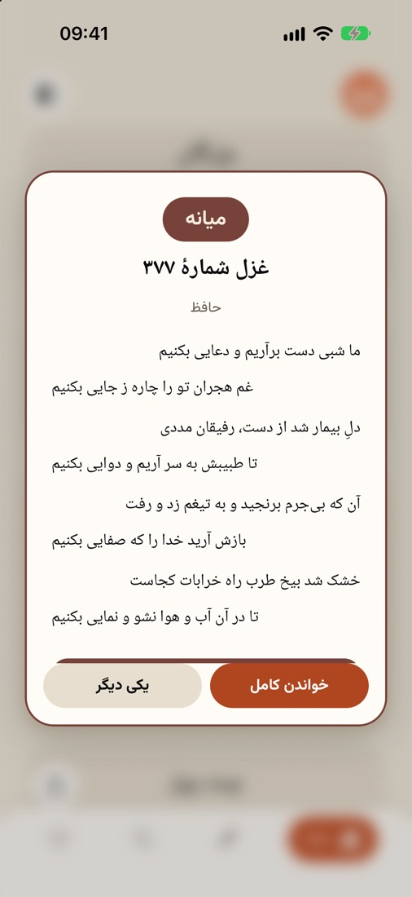
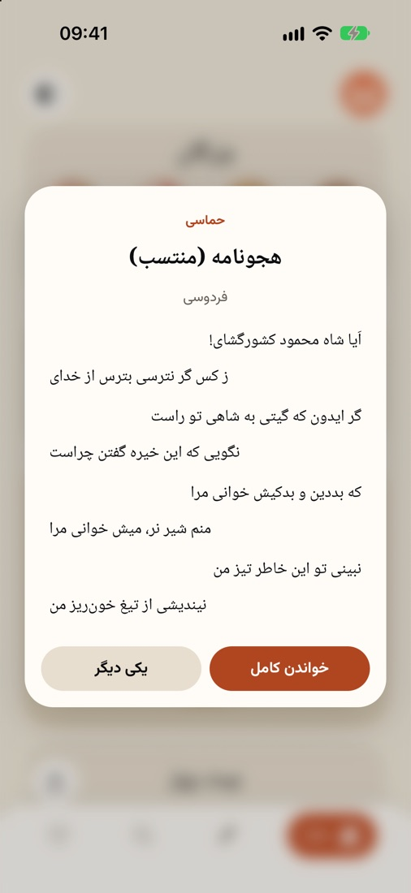
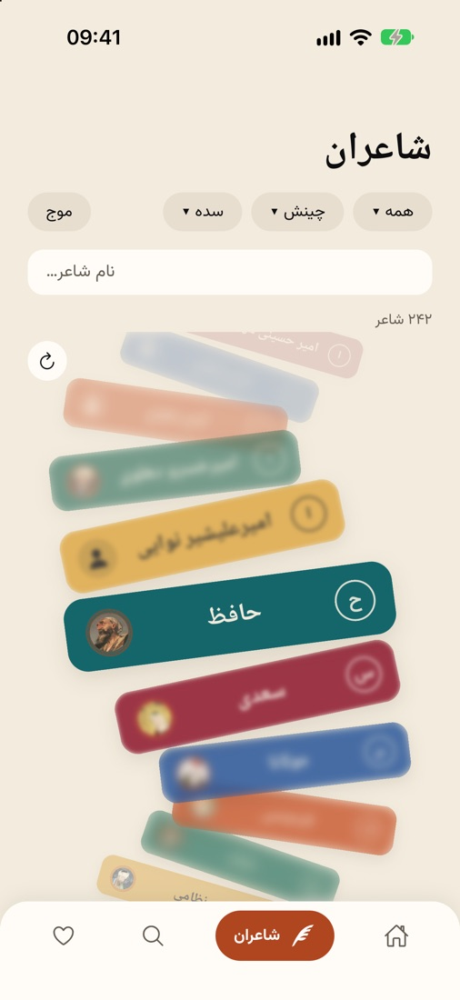
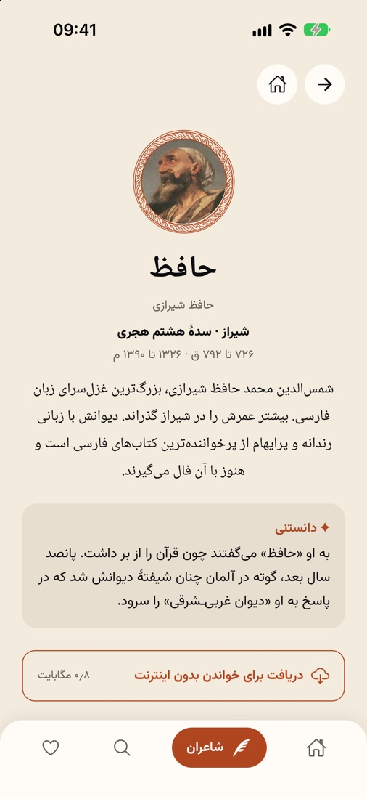
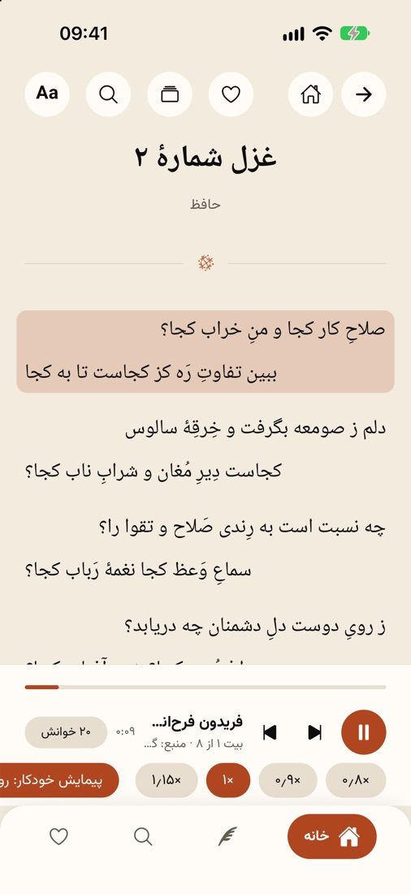

با گنجدان آشنا شوید
گنجدان اپی رایگان و بیآگهی برای خواندن شعر کهن پارسی است، با دادههای آزاد گنجور. اینجا هر بخش را با تصویرش میبینید.

صفحهٔ اول
هر بخش در جعبهٔ خودش است: بزرگان (بیست شاعر بزرگ با چهره)، کلید حال دل / روزگار، فال حافظ، بیت روز که با کشیدن انگشت بیت دیگری میآورد، و «ادامهٔ خواندن» از همانجا که مانده بودید. در روز و شب دو رنگِ هماهنگ دارد.

فال حافظ
آرزویی در دل کنید و انگشت را روی مُهر سیمرغ نگه دارید. مُهر کمکم رنگ عوض میکند و میچرخد، تا باز شود و یکی از ۴۹۵ غزل حافظ بیاید. بالای کارت یک واژه حال و هوای فال را میگوید: خجسته، میانه یا گجسته، هر کدام با رنگ و آوای خودش؛ زیر غزل هم گزارش فال میآید.

حال دل و روزگار
دستگیره را بچرخانید تا روی حالی بایستد: عاشقانه، عرفانی، غمگین، حماسی، پند و حکمت، طبیعت، نیایش. یا کلید را به «روزگار» ببرید و دورهای برگزینید، از ایران باستان و ساسانی تا قاجار و پهلوی. با زدن روی آن، شعری از همان حال و هوا میآید.

۲۴۱ شاعر
شاعران روی موجی میگذرند که میتوانید بکشید و بچرخانید؛ شاعرِ وسط واضح است و هرچه دورتر، محوتر. یا فهرست ساده را ببینید. میتوانید بر پایهٔ بزرگان، زنان و مردان، الفبا، کهنترین و تازهترین، یا سده بچینید و بپالایید.

صفحهٔ هر شاعر
زادگاه و سالها به خورشیدی و میلادی، زندگینامهٔ کوتاهی به قلم خودمان، یک «دانستنی» از داستانهای مشهور زندگیاش، آثارش، و دکمهٔ دریافت دیوان برای خواندن بیاینترنت.

خواندن و شنیدن
بیتها با قلم نسخ یا نستعلیق و اندازهٔ دلخواه. خوانشهای گنجور همگام با متن پخش میشوند: بیتی که خوانده میشود روشن است و صفحه همراهش میرود. میتوانید سرعت را عوض کنید، روی هر بیت بزنید تا خوانش به آن برسد، و به شعر بعدی بروید. هر بیت را هم میشود به شکل تصویر فرستاد.
جستجو
واژه یا مصراعی بنویسید؛ گنجدان میگوید چند شعر یافت شد. میتوانید جستجو را به یک شاعر، به یک دوره یا بازهای از سدهها محدود کنید، و میان «همین واژه» و «واژه و همخانوادههایش» بگزینید.
بیاینترنت
دیوان هر شاعر را یک بار دریافت کنید؛ از آن پس خواندن و جستجو بیاینترنت کار میکند.